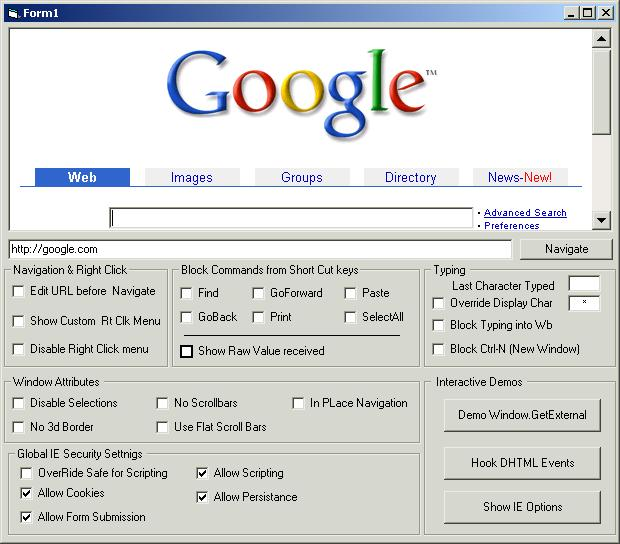

|
A very frequently used component for the VB developer is the Internet Explorer component. It lends itself to all kinds of functions because of its adaptability, network enablement, and powerful document rendering capabilities. It does however lack in certain areas for the Vb developer. How often have you wanted to remove its 3d borders, turn off its scrollbars, ensure that scripting is enabled, turn off context menus, or replace them with your own? These just list a handful of the things that the IE developers pack can help you do. Things that have previously either taken alot of code and knowledge to pull off, or things that most of us jsut had to accept as not possible. This component encapsulates literally months of research, reading, and experimentation. As with all other SandSprite.com components, the clean interface design and user friendly functions should make this a breeze to use. Take a look at the sample applications interface to see a host the functions it encapsulates.  The interface and demo program says it all. If you are like me, you have been searching for all of these abilities in a control for a long time. This product is free software and canbe used freely for both commercial and non-commercial applications without restriction. Download |